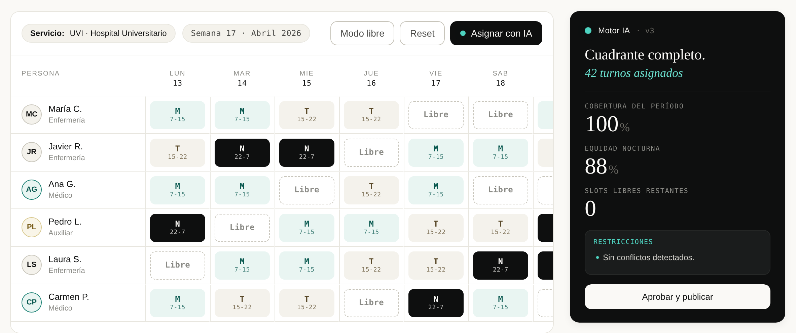
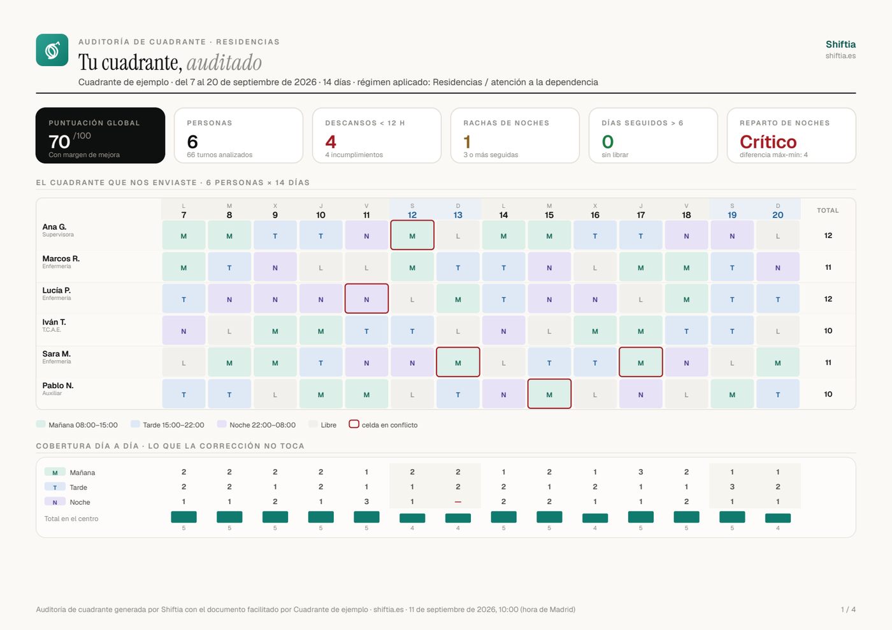
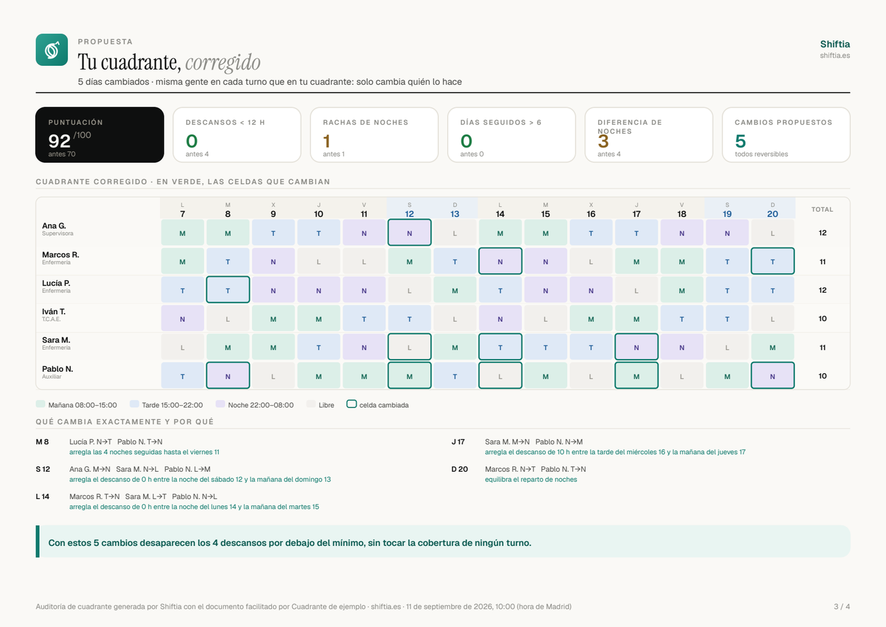
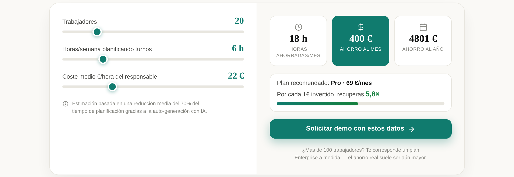

Planificación de turnos con IA para empresas con plantilla propia que rota. Se configura con tu convenio, tus turnos y tus personas: no eres tú quien se adapta al software.
Quien planifica turnos casi nunca es un planificador: es un supervisor de enfermería, un jefe de sala o un responsable de producción que además tiene su propio trabajo.
Shiftia genera el cuadrante completo —mes a mes, todo el año— respetando las reglas que le configuras. No es una ETT ni un marketplace: trabaja solo con tu personal.

La IA lo crea desde cero respetando convenio, equidad de noches y restricciones individuales. No es solo cubrir bajas: es la planificación continua.
Propone tres candidatos puntuando 11 criterios —carga, descansos, convenio, contrato, preferencias, polivalencia y más—. La decisión final siempre es humana.
El detector de conflictos revisa el cuadrante contra tus reglas y señala qué falla y por qué, con el artículo concreto.
Sube tu cuadrante actual en PDF y el lector con IA rellena la aplicación. No hay que empezar de cero ni teclear la plantilla.
Un cuadrante no es un formulario: es tu convenio, tus tramos horarios, tus categorías y tus personas, una por una. Shiftia se configura con todo eso antes de que tú lo toques.
| Software genérico | Shiftia |
|---|---|
| Trae unos turnos fijos y tu operativa tiene que encajar dentro. | Tus tramos horarios, con los nombres que usáis en tu casa. |
| El convenio «lo controlas tú»: el software no sabe qué dice. | El convenio entra como reglas que el motor no puede saltarse. |
| Las mismas reglas para toda la plantilla. | Restricciones persona a persona: quién no hace noches, quién tiene reducción. |
| Empiezas de cero rellenando plantillas vacías. | Se importa el cuadrante que ya usas, en PDF. |
| Te adaptas tú al software. | El software se adapta a ti. |
No te mandamos un panel de ajustes para que lo rellenes tú. En la implantación nos sentamos con tu convenio y tu cuadrante actual delante y lo dejamos funcionando. Si tu forma de trabajar cambia, se cambia la regla — no la forma de trabajar.
Descansos mínimos, tope de noches, jornadas reducidas, conciliaciones y restricciones individuales, persona a persona. Lo hacemos nosotros contigo en la implantación: tú no rellenas formularios.
Con tu plantilla real y tus reglas. Reparte noches, fines de semana y festivos de forma equilibrada, y marca a quién le queda descompensado.
Antes de publicar, el detector de conflictos avisa de cualquier incumplimiento. El equipo lo ve en su móvil y pide cambios desde ahí.
Quien planifica ve el cuadrante completo, los conflictos y los balances. Quien trabaja ve su turno, pide cambios y consulta sus horas desde el móvil. Nadie tiene que preguntar por WhatsApp qué le toca mañana.
Las reglas se configuran una vez y el motor no genera un turno que las rompa. Estas son las que más se incumplen sin querer:
| Regla | Norma | Qué hace Shiftia |
|---|---|---|
| 12 h entre jornadas | Art. 34.3 ET | No encadena un turno que deje menos de 12 h, salvo la excepción que tengas configurada. |
| Excepción del cambio de turno | Art. 19.2 RD 1561/1995 |
En trabajo a turnos, el día del cambio puede bajar de 12 h. Se compensa en los días inmediatamente siguientes, y el sistema lo lleva contado. |
| Día y medio semanal | Art. 37.1 ET | Acumulable hasta 14 días. El detector avisa si una racha se pasa. |
| Trabajo nocturno | Art. 36 ET | Tope de noches por persona y periodo, con la media repartida solo entre quien rota. |
| Sanidad pública | Ley 55/2003 Estatuto Marco |
Régimen propio de jornada y descansos del personal estatutario, configurable aparte. |
Un convenio puede mejorar la ley, nunca empeorarla. Si el tuyo fija dos días de descanso o un tope de noches más estricto, esa es la regla que se configura.
Histórico de cambios y auditoría exportable. Quién cambió qué turno, cuándo y con qué aprobación.
Lo analizamos y te devolvemos un informe con cada incumplimiento, su motivo y el artículo que lo respalda. Sin registro y sin cambiar de software.


shiftia.es/recursos/auditoria-cuadrante
«Revisar en Excel que se cumplieran los criterios con 20 operadores podía costar fácilmente una hora. Ahora se tarda apenas unos segundos.»
Responsable de planificación · 20 operadores a turnos · Industria«Ahora la aplicación me muestra directamente las alternativas más viables para cubrir ese turno.»
Supervisor/a de enfermería · 32 profesionales · Hospital«Los cambios se gestionaban prácticamente todos por WhatsApp. Ahora el trabajador lo solicita en la aplicación y al aprobarlo queda actualizado directamente.»
Responsable de restaurante · 18 trabajadores · HosteleríaCrecer de plantilla no te penaliza. Sin permanencia y con garantía de devolución de 30 días.
| Plan | Mensual | Anual (−20%) | Para quién |
|---|---|---|---|
| Esencial | 29 €/mes | 23 €/mes | Hasta 15 trabajadores. El núcleo de la planificación. |
| Pro ★ MÁS ELEGIDO | 69 €/mes | 55 €/mes | Hasta 40 trabajadores. Incluye la generación con IA. |
| Business | 129 €/mes | 103 €/mes | Hasta 100 trabajadores, multi-centro. |
| Enterprise | A medida | Más de 100 trabajadores, opción on-premise. | |

Nos cuentas cómo son tus turnos y qué convenio te aplica. Sin presentación comercial.
Importamos tu cuadrante actual —vale un PDF— y dejamos tu convenio, tus tramos horarios y las restricciones de cada persona configurados como reglas.
Lo generamos contigo delante y lo comparamos con el que habrías hecho a mano.
Cada persona ve sus turnos en el móvil. No hace falta formar a nadie: se entiende solo.
Cifrado, copias automáticas y cumplimiento del RGPD. Opción on-premise en el plan Enterprise si tu organización lo exige.
Lo dirige Diego Ciborro, enfermero especialista en activo en la sanidad pública. Shiftia nace de hacer cuadrantes reales en un servicio que no cierra ningún día.
Súbenos tu cuadrante actual y te devolvemos el informe de auditoría con los incumplimientos encontrados y la versión corregida. Sin registro. Y si te encaja, hablamos.